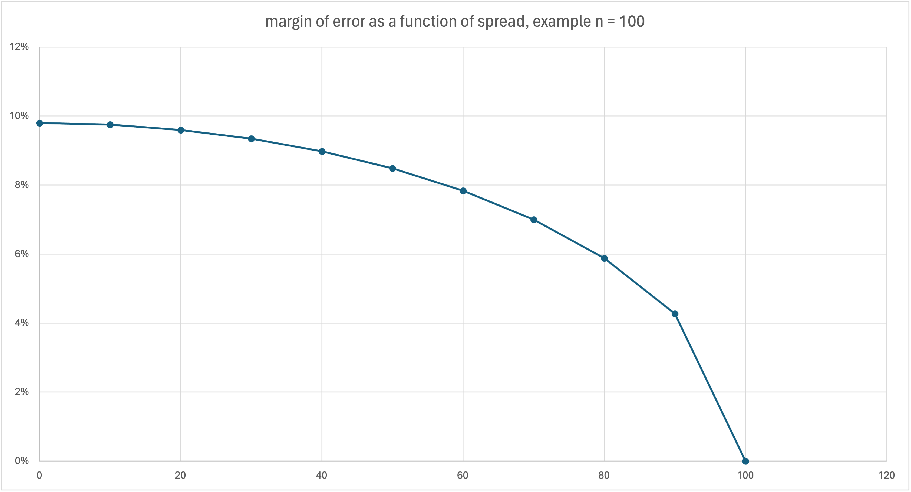
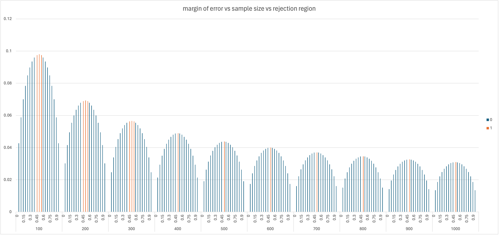

Posted on
yep... we're back. not exactly transit policy related, but definitely public interest and public data related: we're seeing the election cycle turn once more.
agonizingly few journalists and pundits care to contextualize numbers related to polling data as they clumsily wield words like 'margin of error' to get you to shut your brain off and be scared.
so what is a margin of error?
a margin of error qualifies an estimate. for instance, if you took a poll and 52% of your respondents liked candidate A over candidate B (implying 48% prefer candidate B), then we would say there is a 4 point spread between candidates A and B (because: 52-49 = 4)
saying that said survey estimates have a margin of error of 3% means that we expect that in most circumstances (usually 95% of the time, i'll get into this later), candidate A's true polling number (if you surveyed every voting aged person in the country) would fall between 52 +/- 3% so 49%-55%.
the same would hold true for candidate B. We would expect their numbers to fall between 45% and 51%. These two ranges intersect, which means that the estimates themselves may be unreliable.
\( margin of error = z \times \sqrt{\frac{p \times (1 - p)}{n}} \)
where:
if this math scares you thats ok. i'm going to show you why it's harmless, and also a little silly.
 